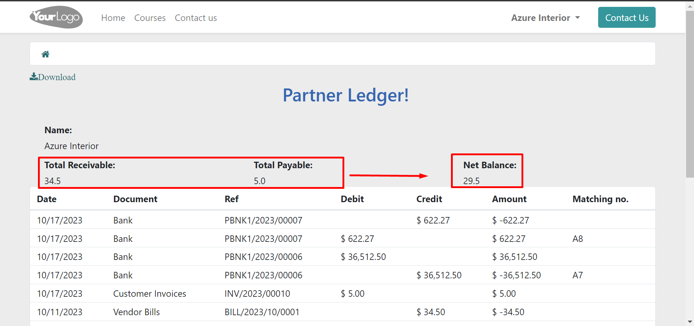
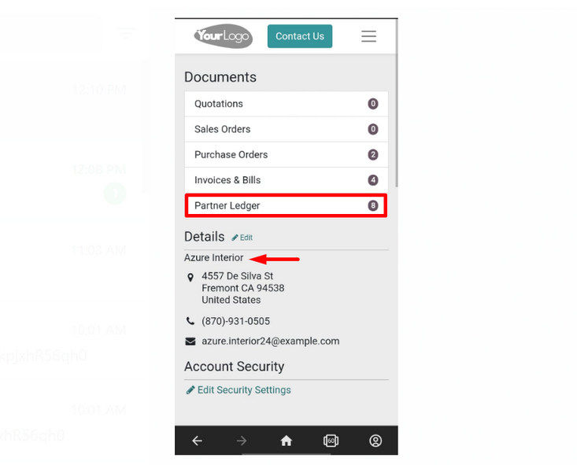

Description
Are you looking for Partner Ledger on Odoo Customer portal? We have developed what you need. This
application empowers your customers to take control of their financial interactions with your business.
Designed with user-friendliness and transparency in mind, this innovative tool seamlessly integrates
with your Odoo ERP system, offering your customers a hassle-free way to access, track, and manage their
ledger information.
Key Features
We can observe that Azure Interior, as a partner, can easily view his Partner Ledger under the heading
Documents.
With the help of the 'Partner Ledger,' a partner can easily view their total receivables, payables and
net balance along with the date, document, Journal reference, debit, credit and matching no. of bills
and invoices with their payments on the Odoo portal.
Detailed Transaction History
Customers gain access to a comprehensive transaction history. Every payment, bill and invoice is neatly
organized, making it easy to track financial interactions.
Total Receivable
Vendors can easily identify outstanding balances that are payable by the company, ensuring that they
stay on top of their financial receivables.
Total Payable
Customers can easily identify outstanding balances that are payable to the company.
Net Balance
Using the 'Partner Ledger,' a partner can easily view his net balance (Total Receivable- Total Payable)
that help him to identify whether he has receivable balance from company or payable balance to company.

Printing Capability
Partners can readily print or download their partner ledger at any time to conduct a thorough analysis
of their receivables and payables in relation to the company.
Mobile Accessibility
Our application is fully responsive and accessible on mobile devices, giving customers the flexibility
to manage their ledger on the go.

Multi-Language Support
Partner Ledger supports multiple languages, and users can switch between languages directly from the
portal.
Real-time Ledger Updates
Customers can view their ledger in real time, with up-to-the-minute information on transactions,
invoices, payments, and balances. Say goodbye to outdated statements and confusion.
Secure Customer Portal
Our application provides customers with a secure and personalized portal where they can access their
financial ledger. User accounts are protected by robust security measures, ensuring data privacy.
The Odoo Customer Portal Ledger transforms the way your customers interact with your business, providing
them with transparency, convenience, and control over their financial transactions. Enhance customer
satisfaction, reduce administrative burdens, and streamline financial processes with this user-friendly
application. Experience the future of financial management today with Odoo Customer Portal Ledger.
Thank You!